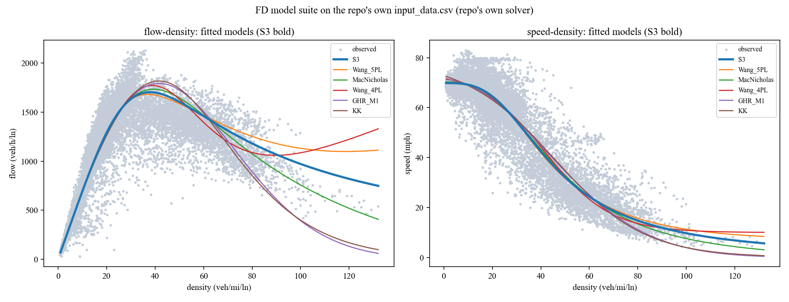

Rerun:
python reproduce_fd16.py — complete dataset in data/, no external paths.
Verified by python -m cbi_pipeline.repro_gates.Model parameters + RMSE (their solver, their data)
| model | rmse_flow | rmse_speed | parameters |
|---|---|---|---|
| S3 | 173.2 | 5.74 | [69.84, 37.852, 3.156] |
| Wang_5PL | 174.8 | 5.73 | [70.161, 7.052, 23.389, 5.758, 0.203] |
| MacNicholas | 177.1 | 5.79 | [70.336, 200.0, 2.652, 42.779] |
| Wang_4PL | 180.9 | 5.87 | [74.597, 10.0, 41.67, 13.559] |
| GHR_M1 | 195.3 | 5.96 | [71.204, 41.556] |
| KK | 200.0 | 6.07 | [79.026, 60.0, 0.759, 0.309, 0.0] |
| Wang_3PL | 200.0 | 6.07 | [79.026, 45.559, 18.564] |
| NF | 209.9 | 5.94 | [70.564, 140.0, 3704.776] |
| Underwood | 274.1 | 7.97 | [80.0, 60.0] |
| Greenberg | 294.8 | 14.88 | [22.652, 180.0] |
| Greenshields | 386.4 | 7.73 | [73.381, 120.0] |
| GHR_M2 | 606.8 | 10.72 | [65.349, 133.003, 1.484] |
| GHR_M3 | 1848.2 | 39.4 | [70.0, 40.0, 2.0] |
| Jayakrishnan | nan | nan | FAILED: ValueError |
Figures

Fidelity notes: 13 of 14 models fit; Jayakrishnan fails inside the repo's own code (bounds/x0 length mismatch — a genuine legacy bug, preserved not patched). The production pipeline uses S3 with Huber loss + bootstrap (
stage3_fd_robust); this suite is the benchmark layer (cbi_pipeline.fd_model_zoo).← all benchmark reproductions · part of cbi_plus